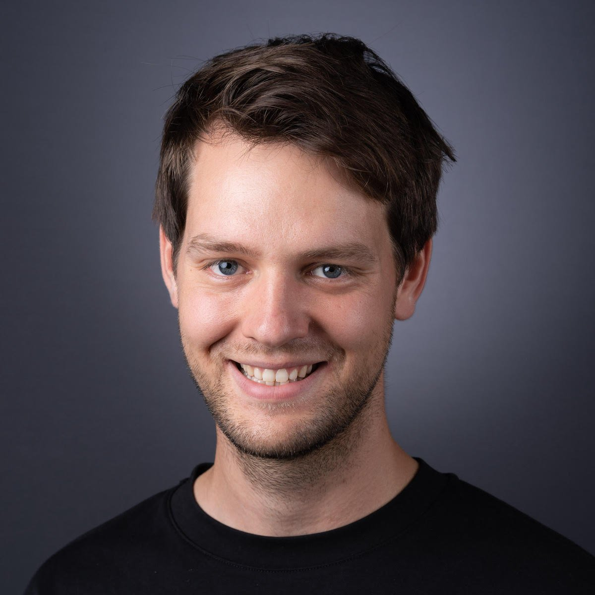
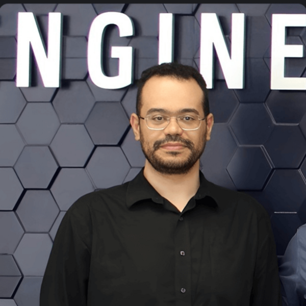
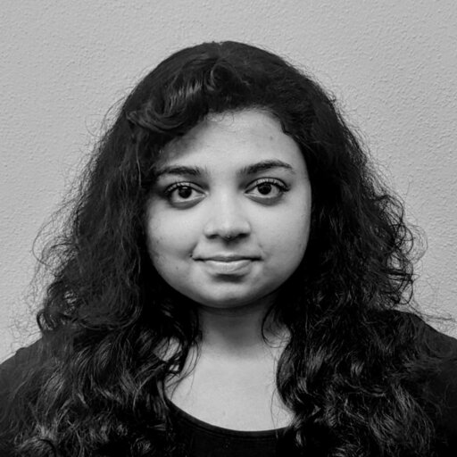
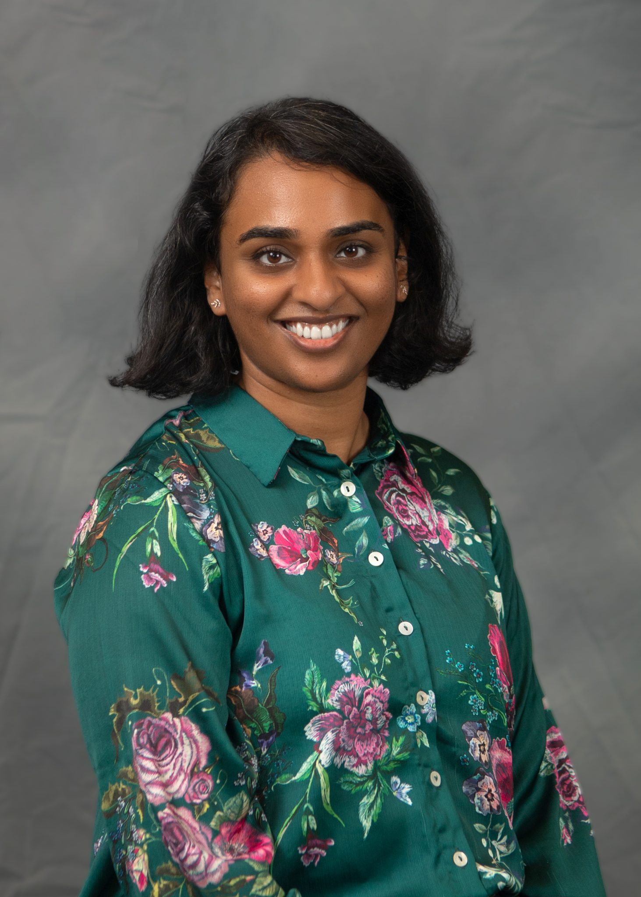
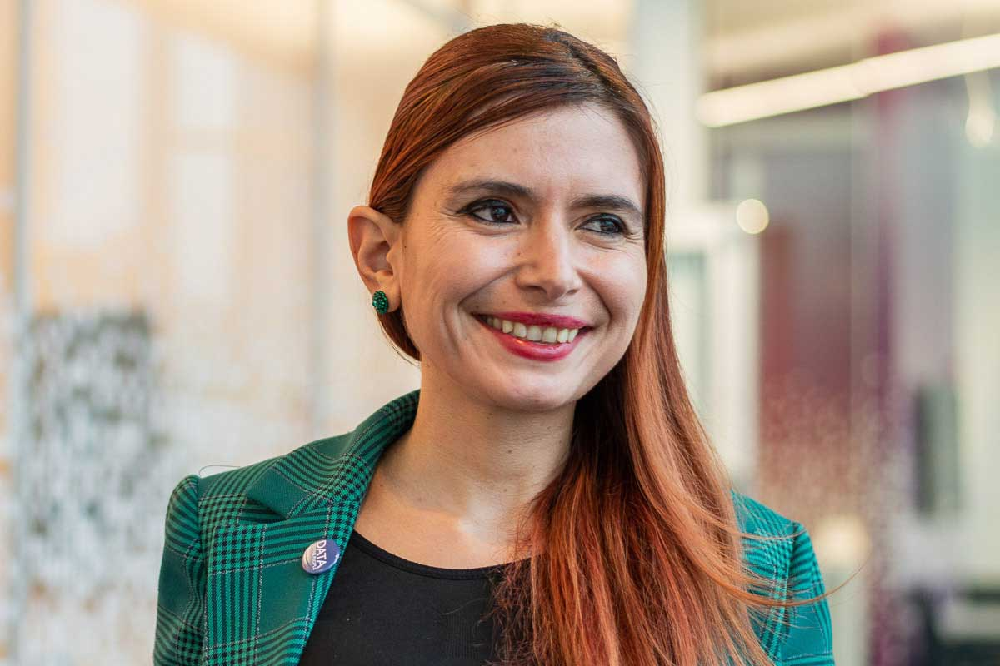
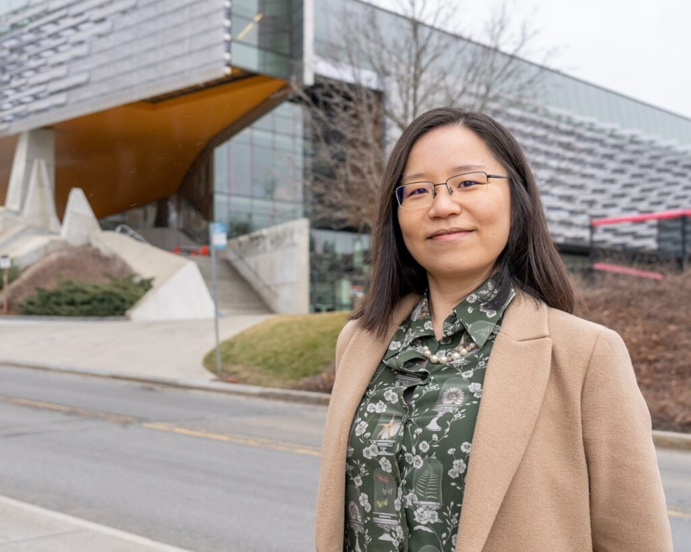
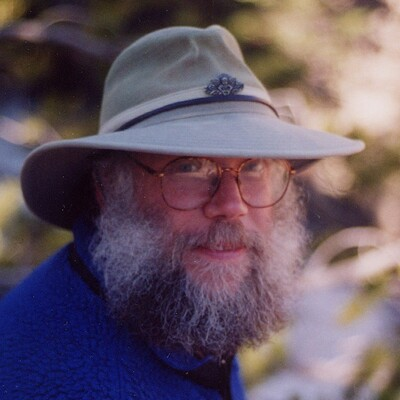

PhD candidate at Cornell Tech researching how Generative AI shapes interactive system design and how students navigate self-initiated AI use in HCI workflows. He also investigates transparency in user research and teaches workshops and summer classes on design ethics.

PhD student at Northeastern University whose work explores the design and evaluation of computational systems that support how people think, work together, and co-create with AI. He also chairs the ACM SIGCHI Boston chapter.

PhD candidate at the University of Notre Dame studying AI-augmented teamwork and human–AI collaboration. His research develops GenAI interventions and multi-agent simulation systems to examine coordination, agency, and accountability in collaborative work.

Postdoctoral researcher at CWI in the AI, Media, and Democracy (AIMD) lab, where she focuses on Responsible AI in news media. She utilizes human-centered design principles to investigate AI-use disclosures in news production.

Assistant Professor of Human-Centered Computing at UNC Charlotte and visiting scholar at Mohamed bin Zayed University of AI (MBZUAI). She leads the Bridges for Responsible Computing group, combining interdisciplinary perspectives to advance accountable AI innovation for economic inclusion.

Assistant Professor and Director of the Civic AI Lab at Northeastern University, where she co-designs, develops, and studies public AI technologies that empower workers, federal agencies, industry leaders, and NGOs.

Assistant Professor at Cornell University researching AI interaction design, including foreseeability of harms in NLP and designing with machine learning. Her work explores how to make AI systems more transparent, fair, and accountable.

Independent researcher pursuing themes of critical computing, human-centered AI, and social justice—including resisting AI solutionism and designing AI that leaves decision-making firmly with human beings.